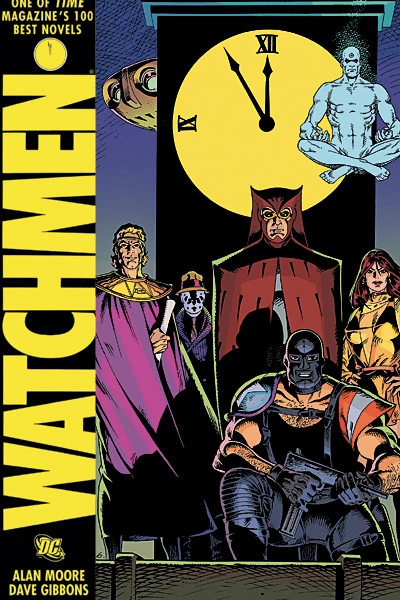

La Liga de la Justicia se fundó alrededor de febrero 20 de 2003, después de que siete héroes (Superman, Batman, Mujer Maravilla, Flash, Linterna Verde, Aquaman y Detective Marciano) tuvieran que trabajar juntos para derrotar la invasión de unos seres de energía conocidos como los Appellaxianos.
Inicialmente se basaron en el Santuario Secreto, una cueva excavada en Monte Justicia por Superman y Linterna Verde. Al principio no hicieron pública su alianza. En 2004, la Liga se había expandido a diez miembros: Flecha Verde, Hombre Halcón y Mujer Halcón se habían unido. Dos años más tarde, el Guasón descubrió la ubicación del Santuario y atacó a Lucas Carr y a la Liga en su interior. La Liga se hizo pública poco después. En 2008, seis nuevos miembros se unieron al grupo. Se eligió un nuevo escondite: el satélite en órbita Atalaya, aunque también utilizaron el Salón de la Justicia como fachada para turistas y medios de comunicación.
"Vigilantes" fue una maxiserie de 12 números publicada desde septiembre de 1986 hasta Octubre de 1987, escrito por Alan Moore e ilustrado por Gibbons Dave. Los eventos de la historia tienen lugar en 1985. El título toma su nombre de una traducción popular de una frase latina, "¿Quis Custodia Ipsos Custodios?"
